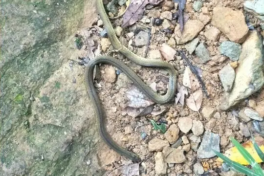
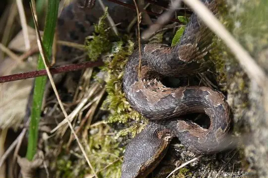

Snakes of Taiwan
58 snake species are recorded in Taiwan in SnakeList: 22 venomous and 36 non-venomous, from 8 families.
- 58species
- 22venomous
- 36non-venomous
- 8families
These totals count the snakes SnakeList records as living in Taiwan. A species counts if it is recorded anywhere in the country, so not every snake lives in every region.
Species
Showing 58 species
 Annulated Sea SnakeHydrophis cyanocinctus
Annulated Sea SnakeHydrophis cyanocinctus Atayal Slug-eating SnakePareas atayal
Atayal Slug-eating SnakePareas atayal Bennett's Mud SnakeMyrrophis bennettii
Bennett's Mud SnakeMyrrophis bennettii
Black Odd-scaled SnakeAchalinus niger Black-striped Rat SnakePtyas dhumnades
Black-striped Rat SnakePtyas dhumnades Boie's Mud SnakeHypsiscopus plumbea
Boie's Mud SnakeHypsiscopus plumbea Brown Spotted PitviperProtobothrops mucrosquamatus
Brown Spotted PitviperProtobothrops mucrosquamatus Buff Striped KeelbackAmphiesma stolatum
Buff Striped KeelbackAmphiesma stolatum Cave RacerElaphe taeniura
Cave RacerElaphe taeniura- No photo yetCheckered KeelbackXenochrophis piscator
 Chinese CobraNaja atra
Chinese CobraNaja atra Chinese Green Tree ViperTrimeresurus stejnegeri
Chinese Green Tree ViperTrimeresurus stejnegeri Chinese Keelback Water SnakeTrimerodytes percarinatus
Chinese Keelback Water SnakeTrimerodytes percarinatus Chinese Many-tooth SnakeSibynophis chinensis
Chinese Many-tooth SnakeSibynophis chinensis Chinese MoccasinDeinagkistrodon acutus
Chinese MoccasinDeinagkistrodon acutus Chinese Mountain Pit ViperOvophis monticola
Chinese Mountain Pit ViperOvophis monticola Chinese Mountain SnakePlagiopholis styani
Chinese Mountain SnakePlagiopholis styani Chinese Mud SnakeMyrrophis chinensis
Chinese Mud SnakeMyrrophis chinensis Chinese Sea SnakeLaticauda semifasciata
Chinese Sea SnakeLaticauda semifasciata Collared Reed Snake (pavimentata)Calamaria pavimentata
Collared Reed Snake (pavimentata)Calamaria pavimentata Common Many-tooth SnakeSibynophis collaris
Common Many-tooth SnakeSibynophis collaris Common Mock ViperPsammodynastes pulverulentus
Common Mock ViperPsammodynastes pulverulentus Common sea kraitLaticauda laticaudata
Common sea kraitLaticauda laticaudata Eastern Russel's ViperDaboia siamensis
Eastern Russel's ViperDaboia siamensis False HabuPseudagkistrodon rudis
False HabuPseudagkistrodon rudis Formosa Kukri SnakeOligodon formosanus
Formosa Kukri SnakeOligodon formosanus Formosa Odd-scaled SnakeAchalinus formosanus
Formosa Odd-scaled SnakeAchalinus formosanus Formosa Slug SnakePareas formosensis
Formosa Slug SnakePareas formosensis Formosa Wolf SnakeLycodon ruhstrati
Formosa Wolf SnakeLycodon ruhstrati Greater Green SnakePtyas major
Greater Green SnakePtyas major- No photo yetHatori's Coral SnakeSinomicrurus hatori
 Ijima's sea snakeEmydocephalus ijimae
Ijima's sea snakeEmydocephalus ijimae Indo-Chinese Rat SnakePtyas korros
Indo-Chinese Rat SnakePtyas korros Kelung Cat SnakeBoiga kraepelini
Kelung Cat SnakeBoiga kraepelini
Kikuchi HabuTrimeresurus gracilis Koma's Formosa Slug SnakePareas komaii
Koma's Formosa Slug SnakePareas komaii Kosempo KeelbackHebius sauteri
Kosempo KeelbackHebius sauteri- No photo yetKoshun Worm SnakeArgyrophis koshunensis
 MacLelland's Coral SnakeSinomicrurus macclellandi
MacLelland's Coral SnakeSinomicrurus macclellandi Maki's KeelbackHebius miyajimae
Maki's KeelbackHebius miyajimae Mandarin RatsnakeEuprepiophis mandarinus
Mandarin RatsnakeEuprepiophis mandarinus Many-banded KraitBungarus multicinctus
Many-banded KraitBungarus multicinctus Oriental Coral SnakeSinomicrurus sauteri
Oriental Coral SnakeSinomicrurus sauteri Oriental RatsnakePtyas mucosa
Oriental RatsnakePtyas mucosa Ornate Kukri SnakeOligodon ornatus
Ornate Kukri SnakeOligodon ornatus Red Bamboo SnakeOreocryptophis porphyraceus
Red Bamboo SnakeOreocryptophis porphyraceus Red-banded SnakeLycodon rufozonatus
Red-banded SnakeLycodon rufozonatus Ringed Keelback Water SnakeTrimerodytes annularis
Ringed Keelback Water SnakeTrimerodytes annularis Russell's ViperDaboia russelii
Russell's ViperDaboia russelii Stejneger's Bamboo SnakePseudoxenodon stejnegeri
Stejneger's Bamboo SnakePseudoxenodon stejnegeri Stoke's SeasnakeHydrophis stokesii
Stoke's SeasnakeHydrophis stokesii Swinhoe's temperate Asian coralsnakeSinomicrurus swinhoei
Swinhoe's temperate Asian coralsnakeSinomicrurus swinhoei Taiwan KeelbackRhabdophis swinhonis
Taiwan KeelbackRhabdophis swinhonis Taiwan Mountain PitviperOvophis makazayazaya
Taiwan Mountain PitviperOvophis makazayazaya Yellow-bellied Sea SnakeHydrophis platurus
Yellow-bellied Sea SnakeHydrophis platurus Yellow-spotted Keelback Water SnakeFowlea flavipunctatus
Yellow-spotted Keelback Water SnakeFowlea flavipunctatus- No photo yetHolarchus konishii
- No photo yetZaocys dhumnades
No snakes in Taiwan match.
Taiwan’s snakes in numbers
- Families: Colubridae 28, Elapidae 12, Viperidae 8, Homalopsidae 3, Pareidae 3, Xenodermidae 2, Pseudaspididae 1, Typhlopidae 1.
- 12 are recorded in no other country in SnakeList: Atayal Slug-eating Snake, Black Odd-scaled Snake, False Habu, Hatori's Coral Snake, Kikuchi Habu, Kosempo Keelback, Koshun Worm Snake, Maki's Keelback, Oriental Coral Snake, Swinhoe's temperate Asian coralsnake, Taiwan Keelback, Holarchus konishii.